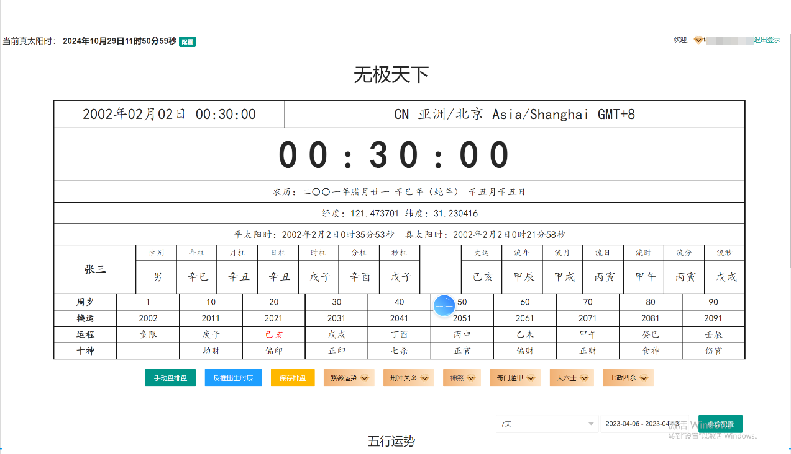

项目定位
本仓库适合检索八字排盘源码、周易排盘系统、五行分析和传统术数软件开发资料。公开文件包括 HTML/JavaScript 页面、Java 服务接口及产品截图。
仓库没有完整 Spring Boot、Docker、数据库迁移和自动化测试。紫微斗数、奇门遁甲是否具备完整算法实现，应以实际源码验证为准。
公开模块
八字与五行
四柱八字、五行关系、流年和综合排盘的界面及前端示例。
传统术数
大六壬、七政四余产品画面，以及紫微斗数、奇门遁甲集成方向。
系统接口
用户、排盘记录、任务、订单、短信和五行配置的 Java 接口。
排盘系统图文展示




使用边界
传统术数结果不应被描述为科学诊断或确定性预测。健康、法律和投资决定应咨询专业人士。